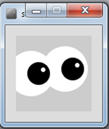
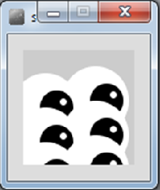
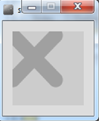
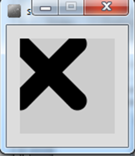
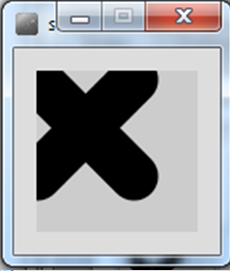
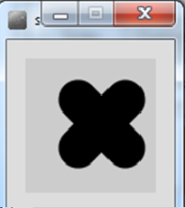
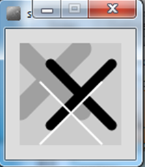
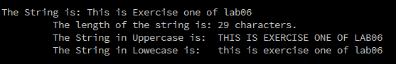
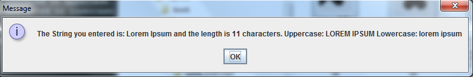

Objectives
- On completion of this lab you should be able to write more sophisticated methods, particularly using parameters and returning data. You will also learn how to use the String methods.
Solution to Previous Lab
The solution for the previous lab can be found here.
Remember our lab advice!
- Your labs are not a race to be the first student finished.
- It is very important that you:
- take your time.
- read the instructions carefully.
- ask your lecturer to explain concepts that you don't understand; that is what we are here for!
- attend ''ALL'' your classes; attendance will be taken.
- where code is given in labs, don't cut and paste it; maximise your learning by typing the code in.
Abstracting code to a method
- In this step, you will draw many eyes (the processing examples 6.1 - 6.3 from your lectures).
Coding the setup() method
Create a new Processing sketch in your workspace and call it Lab06_eyes.
Your display window should be 100x100. Write the line of code that will ensure all subsequent shapes are drawn with no outline.
Coding the draw() method
- Include the following code in your sketch (don't cut and paste it, type it in):
void draw()
{
background(204);
fill(255);
ellipse(50,50,60,60); //outer white circle
fill(0);
ellipse(50+10, 50, 30, 30); //black circle
fill(255);
ellipse(50+16, 46, 6, 6); //small, white circle
}- Run your code; a single eye should be drawn.
Drawing two eyes
Refactor the code above so that you have a method called eye. This method should:
- accept two parameters of type int, representing the x and y coordiates of the eye.
- have a void return type.
Call the eye method twice from the draw method so that your display window is rendered like so:

Drawing six eyes
- Now call the eye method six times from the draw method so that your display window is rendered like so:

Overloading methods
- In this step, you will draw many X's (the processing examples 6.4 - 6.9 from your lectures).
Coding the setup() method
Create a new Processing sketch in your workspace and call it Lab06_Xs.
Your display window should be 100x100 and have a light grey background.
Coding the drawX() method
Write a method called drawX that:
- has a void return type
- has an empty parameter list
- sets the stroke to light grey
- sets the weight of the stroke to 20
- draws two lines that intersect in the shape of an X
Call this method from the setup() method.
When you run your code, it should look like this:

Coding a second drawX() method
Write another method called drawX that:
- has a void return type
- accepts a parameter of type int
- sets the stroke to the parameter
- sets the weight of the stroke to 20
- draws two lines that intersect in the shape of an X
In the setup() method, comment out the call to the previous draw method. Now call this method instead, passing the value of 0 as a parameter.
When you run your code, it should look like this:

Coding a third drawX() method
Write another method called drawX that:
- has a void return type
- accepts two parameters of type int
- sets the stroke to the first parameter
- sets the weight of the stroke to the second parameter
- draws two lines that intersect in the shape of an X
In the setup() method, comment out the call to the previous draw method. Now call this method instead, passing the value of 0, 30 as parameters.
When you run your code, it should look like this:

Coding a fourth drawX() method
Write another method called drawX that:
- has a void return type
- accepts five parameters of type int
- sets the stroke to the first parameter
- sets the weight of the stroke to the second parameter
- draws two lines that intersect in the shape of an X. The third parameter represents X, fourth represents Y and the fifth represents the size of the line.
In the setup() method, comment out the call to the previous draw method. Now call this method instead, passing the values: 0, 30, 40, 30, 35) as parameters.
When you run your code, it should look like this:

Drawing multiple X's
- Using the most appropriate drawX method, reproduce the following output (you will have three method calls):

Drawing shadowed X's
- Using the most appropriate drawX method and a for or while loop, reproduce the following output:

Farenheit / Celsius Converter
- In this step, you will work on reproducing the code examples 6.10 from your lectures.
Writing the coversion method
Create a new Processing sketch in your workspace and call it Lab06_conversion.
Write a method called farenheitToCelsius that takes one float parameter.
The return type for this method is float.
The method returns the result of the conversion: (farenheit - 32.0) * (5.0/9.0)
Calling the coversion method
The farenheitToCelsius method should be called from the draw() method.
The value retuned from the calculation should be printed to the console.
Test your code by passing the farenheit value of 451. The celsius value printed should be: 232.77779
Recursion
- In this step, you will work on reproducing the code examples 6.11 from your lectures.
Solution with no recursion
Create a new Processing sketch in your workspace and call it Lab06_recursion.
Include the following code in it:
void setup()
{
size(100,100);
drawLines(10,4);
}
void drawLines(int x, int num)
{
for (int i = 0; i < num; num--)
{
line (x, 20, x, 80);
x += 5;
}
}- Run the code so you can see the output.
Recap of recursion
A method can contain a line of code that calls itself.
This is called recursion.
To stop the infinite calling of the method, it is necessary to have some way for the method to exit. This is called the base case. You continually work towards the base case.
Using recursion
- Rewrite the drawLines method so that it uses recursion to produce the same output as above.
Exercises
For each exercise listed below, open a new sketchbook.
You may need to visit the Processing website for additional information.
When you are finished all your exercises, zip all your exercises into one file and upload them into lab06 dropbox in Moodle.
Exercise 1 (String methods)
In this exercise, you will call many different methods over a given String.
Declare a String to hold the text This is Exercise one of lab06.
Produce the following console output over the String:

Exercise 2 (Using Message Dialogs)
- Enter the following code into a new sketchbook.
import javax.swing.*;
void setup()
{
String str = JOptionPane.showInputDialog("Enter a String of your choice:");
JOptionPane.showMessageDialog(null, "The String you entered is: " + str);
exit(); //supresses the display window.
}- Run the code and enter any String of your choice. Is it re-displayed back to you?
Exercise 3 (Using Message Dialogs)
Taking the code from Exercise 2 above as starter code, make the necessary changes to display the length of the entered string as well as the entered string.
Run the code and enter any String of your choice. Is it re-displayed back to you, along with the length of the String?
Exercise 4 (Using Message Dialogs)
Using the code from Exercise 3, make the necessary changes to display:
- the entered String.
- the length of the entered string.
- the string convered to uppercase.
- the string converted to lowercase.
Run the code and enter any String of your choice. Is the right information displayed in the JOption pane? However, does it look very cluttered like this? We will fix the layout in our next exercise.

Challenge Exercise 1 (Formatting Message Dialogs)
Escape sequences are used to format Strings in Java:

Research the use of escape characters in Java.
Using the newline escape sequence, format the code from Exercise 4 so that your Message Dialog looks like this: